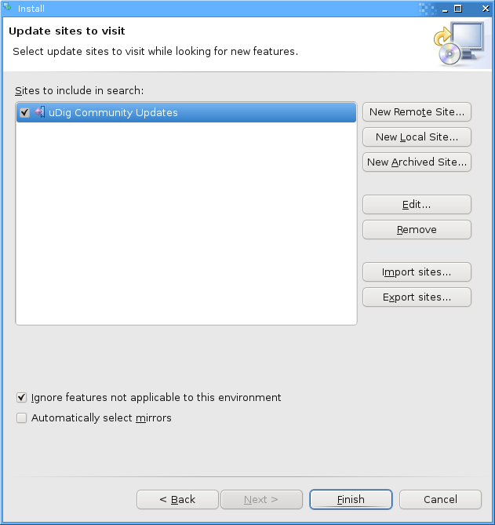

Install Plugin¶
Note
Not applicable This material is out of date as the tools described here are included in the current release
One of the nice things about uDig is the ease to download and install additional plug-ins provided by the developer community.
Open up Help ‣ Find and Install

Select Search for New Features to Install and press Next.

Press the New Remote Site button and type the following parameters:
- Name: uDig Community Updates
- URL: http://udig.refractions.net/update/1.2/community

Check the new uDig Community Updates option and press Finish

Please wait while the program checks the update site for new features.

Once the program finishes getting the complete list of plug-ins, you will see something like this:

Check the latest es.axios.udig.editingtools version from the list and press Next.
Accept the terms in the license agreement and press Next.

Finally confirm the installation location and press Finish.

Many of the community features have not been formally signed, please click Install All when presented with a warning.

You will need to Restart when the installation finishes.

You may have noticed some new options in the toolbar, such as the merge tool described in the next section.
Merge¶
We are going to test the Merge feature.
Load a test layer, like countries and select the Merge tool.

Select some features in your layer.


A new View called Merge Tool will appear in the lower box.

Click on the green check Apply button in the Merge view toolbar to run the merge of the features.
The result will be something like this: